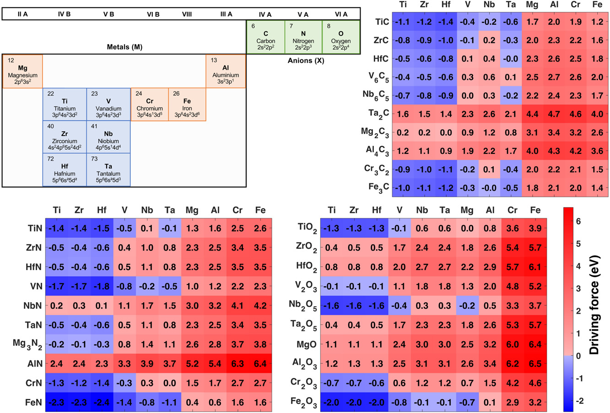

Physica B: Condensed Matter | Vol. 668 | Nov 2023, 415264 | Link
- Decoupled mechanical (distortion) and chemical (electronic binding) energies due to the introduction of solute atoms like B, C, N, and O in Fe.
- Showed that distortion energy alone does not indicate the preference of solute atoms for a site in bulk.
Computational Materials Science | Vol. 224 | May 2023, 112155 | Link
- Considered 300 metal/ceramic systems: a combination of 10 metals (M=Ti, Zr, Hf, V, Nb, Ta, Mg, Al, Cr, and Fe) and corresponding 30 ceramics MaXb (X=C, N, and O).
- Assessed driving force to form a graded interface by calculating vacancy and interstitial formation energies of anions in ceramics and metals, respectively using DFT.

Applied Surface Science | Vol. 597 | Sep 2022, 153637 | Link
- Showed atomically graded Ti/TiN interface is theromodynamically more favorable over a sharp interface.
- A gradual variation in lattice constants and mechanical properties were shown across the interface.

Journal of Materials Science: Materials in Electronics | Vol. 33 | May 2022, 13539 | Link
New Journal of Chemistry | Vol. 44 | Feb 2020, 4877 | Link